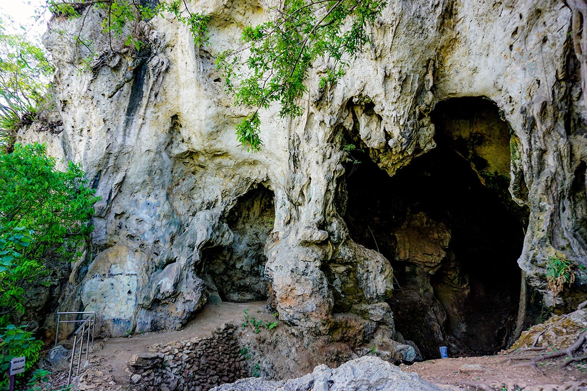

Cagar Budaya Fisik Ikonik

Gedung Sate
Ikon Kota Bandung dengan arsitektur Indische yang khas. Dikenal dengan ornamen tusuk sate di puncaknya. Dibangun tahun 1920.

Situs Gua Pawon
Situs arkeologi penting di Bandung Barat, tempat ditemukan kerangka manusia purba (Homo sapiens) berusia ribuan tahun.

Jalan Braga (Old Street)
Jantung Kota Bandung tempo dulu, dikelilingi bangunan-bangunan bergaya Art Deco dan Neo-Klasik yang terawat sejak masa kolonial.
Warisan Budaya Tak Benda Sunda
-
Kesenian Angklung Alat musik bambu khas Jawa Barat yang dimainkan secara orkestra, kini menjadi warisan dunia UNESCO.
-
Wayang Golek Sunda Seni pertunjukan boneka kayu yang menceritakan kisah epik, sering dibawakan oleh Dalang dengan bahasa Sunda.
-
Degung Jenis musik tradisional Sunda yang menggunakan instrumen gamelan dengan tangga nada pelog dan salendro yang khas.
-
Surabi Makanan tradisional yang populer di Bandung, terbuat dari tepung beras dan dimasak di atas tungku tanah liat.
-
Upacara Adat Berbagai upacara adat Sunda seperti "Seren Taun" (syukuran panen) yang masih dilestarikan di sekitar Bandung.
Informasi Pelestarian Bandung
Untuk informasi detail, agenda pelestarian, atau pelaporan cagar budaya di Kota Bandung, silakan hubungi:
Dinas Kebudayaan Telusuri Peta